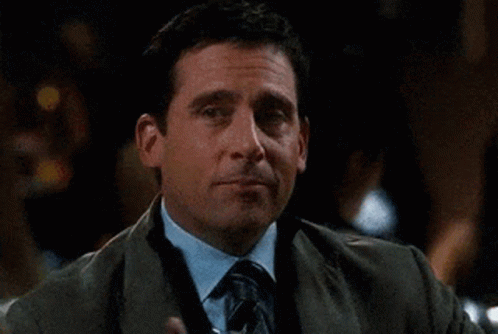

The Office é uma série televisiva de comédia em formato de pseudodocumentário exibida pela NBC. Uma adaptação da série britânica The Office da BBC, seus episódios retratam o cotidiano dos funcionários de um escritório em Scranton, Pensilvânia, filial da empresa fictícia Dunder Mifflin Paper Company. Estreou em 24 de março de 2005 e esteve no ar até 16 de Maio de 2013, totalizando 9 temporadas e 201 episódios.

Ator da série The Office, Steve Carell
Steve Carell permaneceu no programa até o final da sétima temporada, quando seu contrato terminou. A série ainda permaneceu no ar até a nona temporada, com o último episódio sendo exibido em 16 de maio de 2013.
No Brasil a série, chamada como The Office, estreou em 2008 e teve seu episódio final transmitido em 2009 pelo canal Ideal TV, que na época era sobre empresas e carreiras.
Escolha do elenco
O executivo da NBC Kevin Reilly sugeriu ao produtor Ben Silverman que Paul Giamatti fosse escalado para o papel de Michael Scott, mas o ator recusou. Martin Short, Hank Azaria e Bob Odenkirk foram outros nomes considerados. Em janeiro de 2004, a Variety divulgou que Steve Carell, do popular programa The Daily Show with Jon Stewart, do Comedy Central, estava em negociações para assumir o papel. Na época, ele já havia comprometido-se com outra comédia da NBC, Come to Papa, mas com o cancelamento desta, seu caminho ficou livre para estrelar The Office. Carell afirmou mais tarde que só assistiu metade do episódio piloto da série original britânica antes de fazer os testes, preferindo não ver o restante por medo de acabar copiando o estilo de Rick Gervais.
Rainn Wilson, escalado para o papel de Dwight Schrute, um puxa-saco sedento por poder, assistiu todos os episódios da série original antes de sua audição. Wilson fez testes para interpretar Michael, performance descrita por ele como "um imitação horrível de Ricky Gervais", mas os diretores gostaram muito mais de seu teste para Dwight, e ele ficou com este personagem.
O elenco de apoio traz atores conhecidos por seu trabalho de improvisação no teatro: Angela Kinsey, Kate Flannery, Oscar Nunez, Leslie David Baker, Brian Baumgartner, Melora Hardin e David Denman. Kinsey fizera testes para o papel de Pam, mas os produtores acharam-na "mal-humorada demais" para a personagem, convidando-a então para o papel de Angela Martin. Flannery fez testes para interpretar Jan Levenson-Gould, antes de ganhar o papel de Meredith Palmer. Os primeiros testes de Baumgartner foram para interpretar Stanley, mas ele acabou ganhando o papel de Kevin. O produtor Ken Kwapis gostou da maneira como Phyllis Smith, assistente de elenco, lia com outros atores durante seus testes, e ela acabou sendo escalada para o papel de Phyllis Lapin. No começo da terceira temporada, Ed Helms e Rashida Jones entraram para o elenco como funcionários da filial de Stamford da Dunder Mifflin. Jones deixaria a série mais tarde, enquanto Helms era oficializado como integrante fixo.
Formato
The Office é um pseudodocumentário. A motivação principal por trás do programa é que uma equipe de filmagem decidiu registrar o cotidiano da empresa Dunder Mifflin e seus funcionários. A presença da câmera é reconhecida por todos os personagens, especialmente Michael Scott, que participa com entusiasmo das filmagens. Outros, como Jan Levenson, mostram-se frequentemente incomodados ou desconfortáveis com sua presença. As histórias do programa são intercaladas por entrevistas "confessionais" realizadas individualmente, onde os personagens conversam com a equipe sobre os eventos mostrados. Ocasionalmente duas pessoas dividem uma entrevista, conversando um com o outro e com a câmera ao mesmo tempo. Isto ocorre principalmente entre Jim e Pam, e ocasionalmente entre Oscar e Kevin ou Kelly e Ryan e Jim e Dwight. Dwight frequentemente interrompe as entrevistas de Michael, pois permanece perto dele sempre que a filmagem começa. Em outras ocasiões, personagens utilizam-se da presença da câmera em proveito próprio, enquanto em outras ela aparentemente afeta o enredo, interrompendo conversas privadas ou providenciando ajuda quando necessário.
Notas
No início da série, o personagem Michael Scott foi inspirado em David Brent, da versão britânica da série.
Steve Carell deixou a série ao final da sétima temporada para focar em sua carreira no cinema.
O formato de pseudodocumentário é inspirado em estilos de programas de televisão britânicos, mas com um tom mais cômico e dramático.
A maior parte das cenas foram gravadas em um escritório real na Pensilvânia, mas a maior parte da série foi filmada em estúdio na Califórnia.
A série recebeu vários prêmios, incluindo um Emmy de Melhor Série de Comédia em 2006.
O episódio “Dinner Party” é considerado um dos mais memoráveis e foi escrito pelos próprios atores Steve Carell e Mindy Kaling.